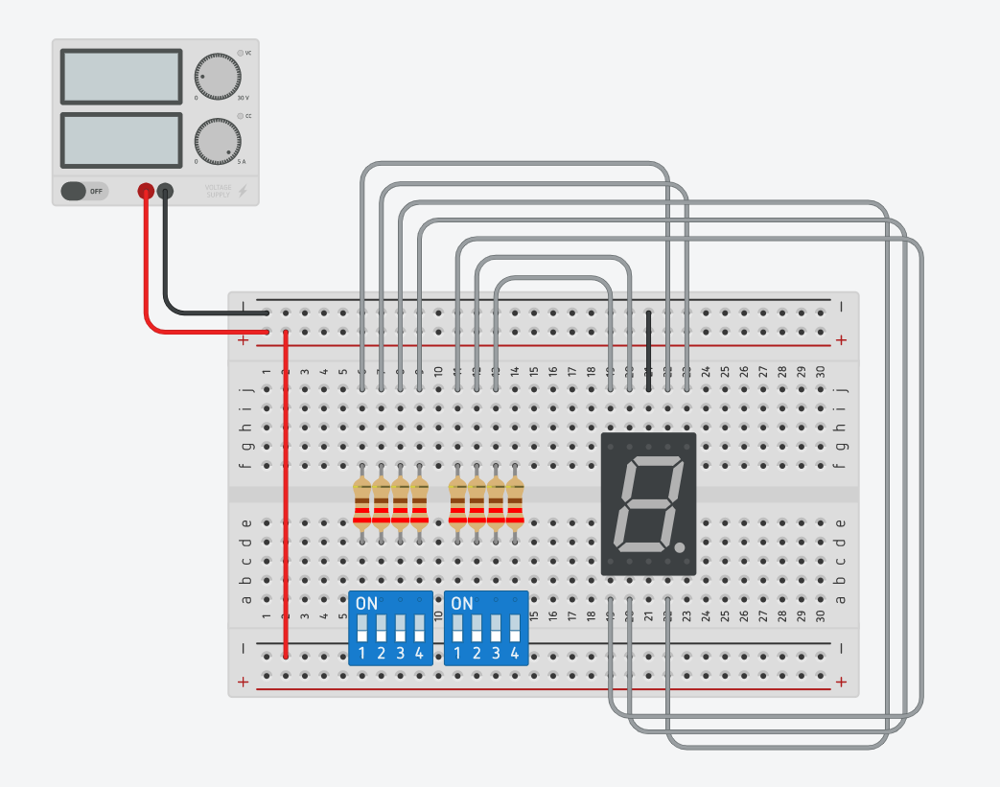
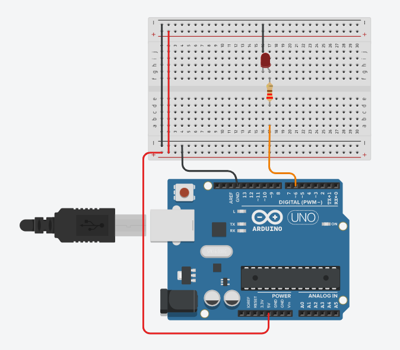
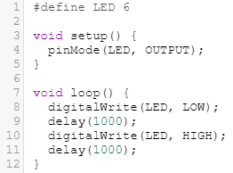
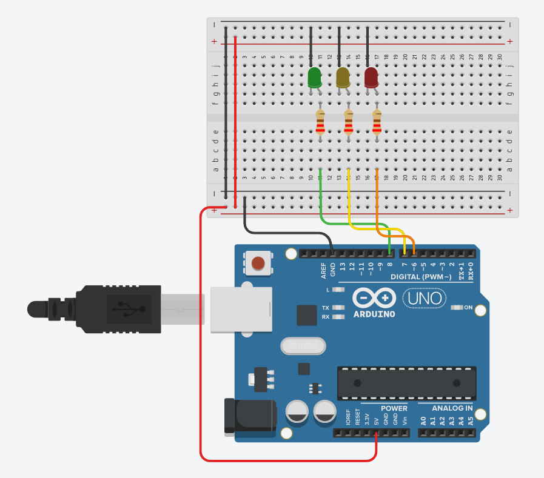
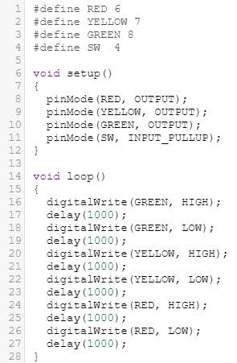
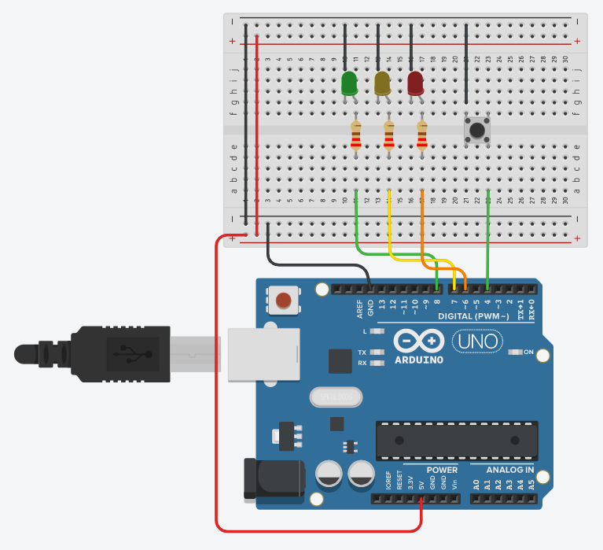
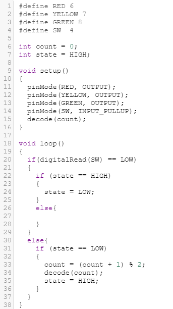
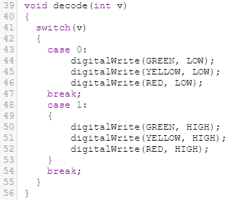
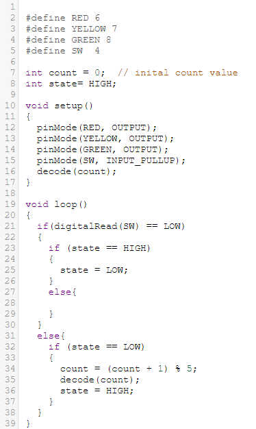
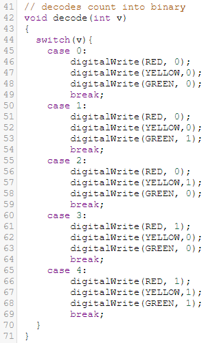

Timer with 555
For this exercise we are tasked to create the schematic into TinkerCAD circuits and simulate it. The schematic is shown below.

The 555 timer is configured as an astable using R and C values. The result is an alternating HIGH/LOW signal which causes the red LED to flash.
UNO 7-Segment Timer
We were told to experiment with the 7-segment circuit, and convert it to using an UNO to control the display. The program created should count from 0-9 continously.

I create the circuit by simply rewiring the wires to the digital inputs on the UNO board. I wrote a code that can be found in the embed below.
UNO One Switch Many States
First, we start with a simple LED control. Connect a LED with a 220 ohm resistor to digital pin 16 of the Arduino Uno board. TinkerCAD file.

Then, write a code that makes the LED blink. The code I used is shown.

Second, we use the same technique and connect 3 LEDs of different colours using digital pins 6, 7 and 8. TinkerCAD file.

Then, write a code that produces running lights. The lights should light up in sequence eg. G > Y > R > G > Y > R > etc. The code used is shown.

Third, add a push button switch to the circuit.TinkerCAD file

Then, write a code where when the switch is pressed, the LEDs will light up. When the switch is pressed again, the LEDs will turn off. The code used is shown.


Forth, use the switch to control the type of lighting and flashing of the LEDs. Make the switch have 5 states. 1st - OFF, 2nd - only GREEN on, 3rd - only YELLOW on, 4th - only RED on, 5th - ALL on.

This part of the code is the same as found in part 3. But the count equation is changed to suit the 5 states.

This part of the code has more states then in 3. This is written in a way to suit the states as mentioned above.